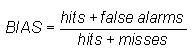
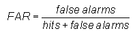
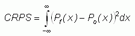

Probability of detection -
What's here?
Introduction - what is this web site about?
| Nature of forecast: | Example(s) | Verification scores/methods |
deterministic (non-probabilistic) |
quantitative precipitation forecast | |
| probabilistic | probability of precipitation, ensemble forecast | |
| qualitative (worded) | 5-day outlook | |
| Space-time domain: | ||
| time series | daily maximum temperature forecasts for a city | |
| spatial distribution | map of geopotential height, rainfall chart | |
| pooled space and time | monthly average global temperature anomaly | |
| Specificity of forecast: | ||
| Specificity of forecast: | occurrence of fog | |
| multi-category | cold, normal, or warm conditions | |
| continuous | maximum temperature | |
| object- or event-oriented | tropical cyclone motion and intensity |
Bias score - 
Measures the ratio of the frequency of forecast events to the frequency of observed events.
Range: 0 to infinity. Perfect score: 1.
Characteristics: Indicates whether the forecast system has a tendency to underforecast (BIAS<1) or overforecast (BIAS>1) events. Does not measure how well the forecast corresponds to the observations, only measures relative frequencies.
In the example above, BIAS = (82+38) / (82+23) = 1.14, indicating slight overforecasting of rain frequency.
- - - - - - - - - - -
Probability of detection - 
Measures the fraction of observed events that were correctly forecast.
Range: 0 to 1. Perfect score: 1.
Characteristics: Sensitive to hits, good for rare events. Ignores false alarms. Can be artificially improved by issuing more "yes" forecasts to increase the number of hits.
In the example above, POD = 82 / (82+23) = 0.78, indicating that roughly 3/4 of the observed rain events were predicted.
- - - - - - - - - - -
False alarm ratio - 
Measures the fraction of "yes" forecasts in which the event did not occur.
Range: 0 to 1. Perfect score: 0.
Characteristics: Sensitive to false alarms. Ignores misses. Can be artificially improved by issuing more "no" forecasts to reduce the number of false alarms.
In the example above, FAR = 38 / (82+38) = 0.32, indicating that in roughly 1/3 of the forecast rain events, rain was not observed.
- - - - - - - - - - -
Brier score - 
Measures the mean squared probability error. Murphy (1973) showed that it could be partitioned into three terms: (1) reliability, (2) resolution, and (3) uncertainty.
Range: 0 to 1. Perfect score: 0.
Characteristics: Sensitive to climatological frequency of the event: the more rare an event, the easier it is to get a good BS without having any real skill. Negative orientation (smaller score better) - can "fix" by subtracting BS from 1.
- - - - - - - - - - -
Relative operating
characteristic -  Plot POD vs false alarm rate
(false alarms / observed no, also known as
probability of false detection), using a set of increasing
probability thresholds (for example, 0.05, 0.15, 0.25, etc.) to
make the yes/no decision. The area under the ROC curve is
frequently used as a score.
Plot POD vs false alarm rate
(false alarms / observed no, also known as
probability of false detection), using a set of increasing
probability thresholds (for example, 0.05, 0.15, 0.25, etc.) to
make the yes/no decision. The area under the ROC curve is
frequently used as a score.
Measures the ability of the forecast to discriminate between two alternative outcomes.
Range: 0 to 1, 0.5 indicates no skill. Perfect score: 1
Characteristics: Allows the cost of false alarms to be assessed. Does not deal with missed events. Says nothing about reliability.
- - - - - - - - - - -
Ranked probability score - 
where M is the number of forecast categories,
pk is the predicted probability in forecast
category k, and ok is an indicator
(0=no, 1=yes) for the observation in category k.
Continuous version - 
Measures the sum of squared differences in cumulative probability space for a multi-category probabilistic forecast.
Range: 0 to 1. Perfect score: 0.
Characteristics: Penalizes forecasts more severely when their probabilities are further from the actual outcome. Negative orientation - can "fix" by subtracting RPS from 1. For two forecast categories the RPS is the same as the Brier Score.
- - - - - - - - - - -